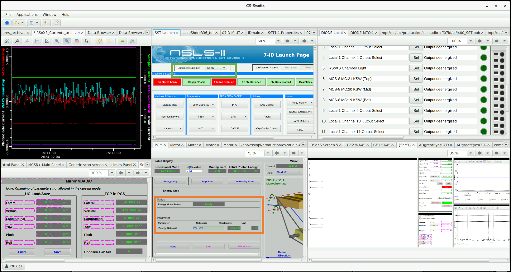
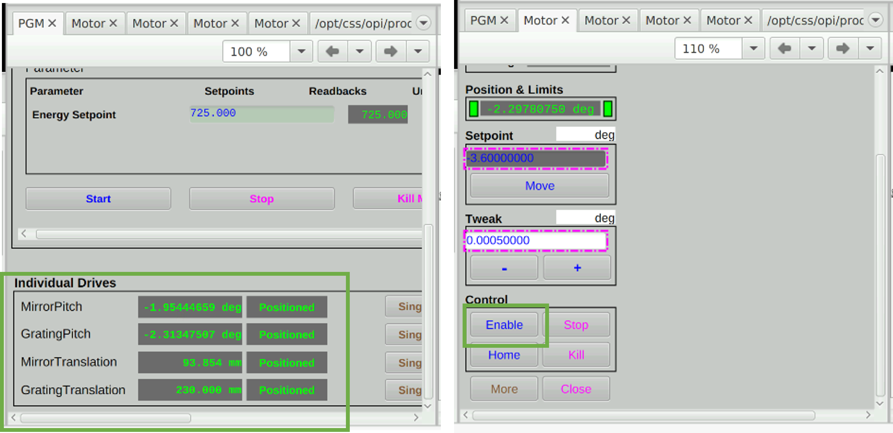
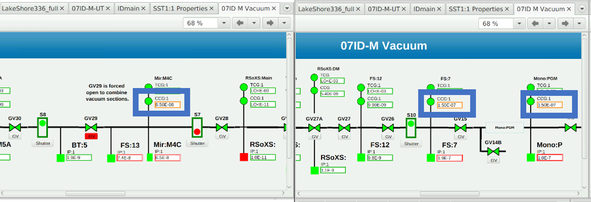
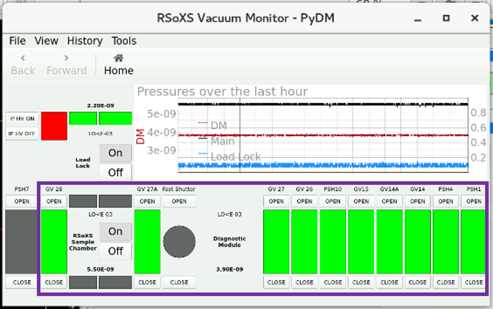

Beam time startup
Follow these instructions for instrument calibrations and optimizations when first getting beam.
If not done by now, have users authenticate into the correct proposal directory.
At this time, it can be helpful to shut off the Greateyes CCD camera for 5 min and then turn the CCD camera back on to reduce the occurrence of server disconnects.
Ensure RSoXS is the active endstation
Obtain confirmation from other SST scientists, especially prior users, to ensure RSoXS can take control.
Go to the “SST Launch” tab on phoebus and choose “Endstation Selected: RSoXS”.

Choose “Endstation Selected: RSoXS” (green box) and ensure that there are no energy movements (orange box) Go to the “PGM” tab on phoebus and check that the “Energy Move Status” shows Ready (does not show “Moving”) and that the “Energy Setpoint” values are not changing. Also, check that all “Individual Drives” are not disabled; if they are, go to the individual “Motor” tabs and click “Enable”.

Enable PGM motors if needed. Ensure oxygen bleed is turned on for M1, M2 (Mono:PGM), M3 (FS:7), and M4. DO NOT change to the RSoXS grating without ensuring sufficient oxygen pressure. On phoebus, go to the “07ID M Vacuum” tab, and scroll to the right. The readouts for these mirrors should be above 1e-8 Torr. These pressures also can be viewed in the pressure gauge racks downstream of the hutch.

Beamline pressures in phoebus. Blue boxes: pressures indicate oxygen leak is running. It is especially important to check at the beginning of a cycle when the oxygen flow has been started recently, as the levels can be less stable. If the levels need to be adjusted, it is not required to wait for any equilibration period. The RSoXS grating can be used as soon as the pressures are adequate. The “07ID M Vacuum” tab can be found by going to the “SST Launch” main page and navigating to the “Vacuum” –> “M” menu. The readings are listed from downstream (left) to upstream (right). The green/red square next to the IP:1 readouts indicate whether the ion pump is on/off. The TCG (thermocouple gauge) is used for higher pressure readings. The CCG (cold cathode gauge, ion gauge) is used for very low pressure readings under typical ultrahigh vacuum operations. The IP:1 (indirect pressure reading) is based on the ion current reading in the ion pump and should be similar to the CCG reading.
Load the grating (PGM) which will be used for the measurements. Usually, it is the RSoXS 250 variable-line-spacing grating.
RE(grating_to_rsoxs())On phoebus, PGM should show up as “RSoXS 250 l/mm” with CFF = 1.45 along with gold mirror (M2) as either Gold #1 or Gold#2. If it does not move for a long time, PGM motors may need to be enabled again in phoebus. Note, RE stands for “run engine”. It is often used to orchestrate motor movements and other physical hardware on the beamline. Anytime the grating is changed, the energy will need to be newly calibrated, as the translation does not precisely land at the correct calibration.
Before setting a clear beam pathway to the RSoXS chamber, ensure that the components within the RSoXS chamber are withdrawn.
- E.g., Detector cameras should be withdrawn, as direct beam on the camera can damage the sensor.
- E.g., Samples should be out of the beam path, as unnecessary exposure can damage samples.
Open all upstream gate valves and shutters in the beamline other than the Fast Shutter. Verify in the RSoXS Vacuum Monitor - PyDM that there is a clear path from the source to the RSoXS chamber. If planning to use the downstream diagnostic module 7 (DM7) components (e.g., large area photodiode, fluorescence screen), also open PSH7.

Purple box: The gate valves and shutters that need to be open (green) for the a clear beam pathway into the RSoXS chamber.
Align mirrors and detectors for maximum flux
An exhaustive beam alignment protocol is available in the staff resources. Below are steps to make quick and minor adjustments to get sufficiently high flux for measurements for routine beam times.
Note the current EPU front-end slit positions (on Phoebus) and mirror positions using the function below:
view_positions("MirrorConfiguration_RSoXS")Set the EPU front-end slit positions (on Phoebus) and mirror positions to those used for RSoXS. Run
view_positionsagain to ensure the desired positions have been reached.RE(load_configuration("MirrorConfiguration_RSoXS"))Load one of the NEXAFS configurations, such as:
RE(load_configuration("WAXSNEXAFS"))If loading any non-standard configuration, ensure that the Slit 1 horizontal aperture is sufficiently narrow. Ensure that the beamstop moves into position (e.g., WAXS Beamstop ~71 mm in PyDM). For example, ampfault errors may need to be cleared before the configuration is properly loaded.
In Bluesky, set the energy to 270 eV, as this energy is commonly used for calibration, and expected flux values at this energy are better known and documented.
e 270Check that there is flux on Izero mesh. Close and open the PSH10 shutter, and look at the RSoXS archiver live plot on phoebus. The Izero signal should go down and then up. If not, then beamline alignment is necessary. Prior set of alignment parameters can be referenced in the commissioning records.
Open the fast shutter and check that there is some flux on the beamstop diode. If not, the beamstop diode position needs to be adjusted. First, try using the motor to move the beamstop in and out while monitoring the phoebus live plot. Occasionally, the manual port aligner (three set of nuts on the beamstop assembly exterior) may need to be used to adjust other axes. Generally a quarter turn of one of the alignment nuts is more than enough.